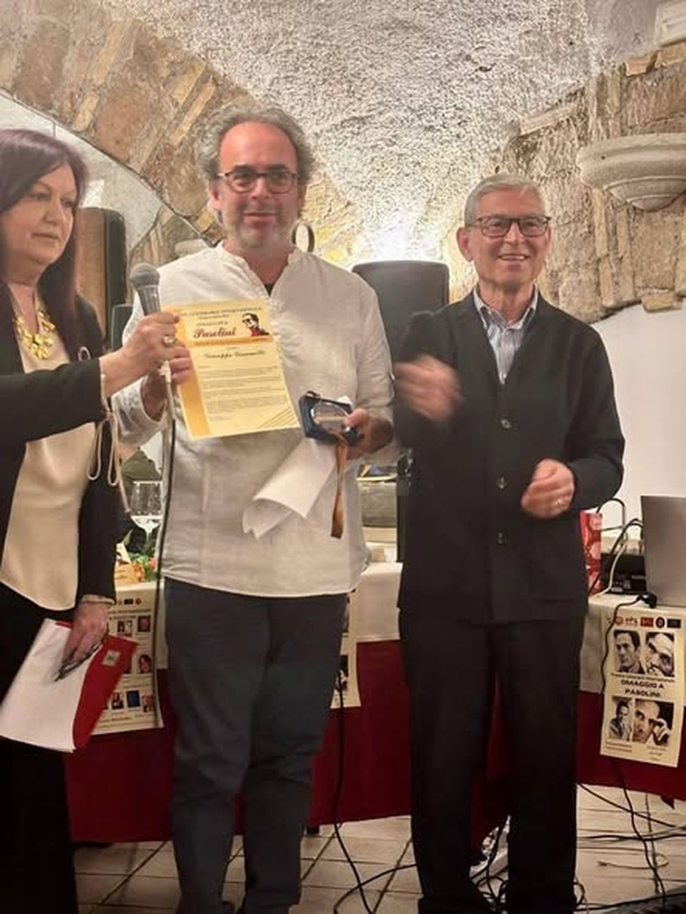

Omaggio a Pier Paolo Pasolini
Pasolini e Michelangelo: due geni, lo stesso tormento
Intervento letto al Ristorante Pommidoro, San Lorenzo, Roma, il 18 aprile 2026, a chiusura delle giornate del Premio Letterario Internazionale Omaggio a Pasolini. La sera prima, alla Pro Loco San Lorenzo, la lettura di una poesia inedita.

Alberto Moravia, al funerale di Pasolini, disse:
«Abbiamo perso prima di tutto un poeta. E poeti non ce ne sono tanti nel mondo, ne nascono tre o quattro soltanto in un secolo. Quando sarà finito questo secolo, Pasolini sarà tra i pochissimi che conteranno come poeta. Il poeta dovrebbe esser sacro.»
Pasolini non fu soltanto un grandissimo poeta. Fu un genio rinascimentale nel Novecento: poeta, romanziere, regista, saggista, drammaturgo, pittore. In Italia non accadeva da secoli che un uomo solo attraversasse tutte le forme dell'espressione. Un paragone possibile è Michelangelo Buonarroti, scultore, pittore, architetto e poeta, che scriveva d'amore con la stessa veemenza con cui attaccava il marmo.
Ma il legame più profondo tra i due è il tormento. Michelangelo, nel Cinquecento, è posseduto dall'amore. L'io si dissolve, il cuore trabocca e non trova uscita; il desiderio è colpa, il corpo è peccato, marmo da redimere. Non se ne liberò mai.
Michelangelo scrisse:
Come può esser ch'io non sia più mio? O Dio, o Dio, o Dio, chi m'ha tolto a me stesso, c'a me fusse più presso o più di me potessi che poss'io? O Dio, o Dio, o Dio, come mi passa el core chi non par che mi tocchi? Che cosa è questo, Amore, c'al core entra per gli occhi, per poco spazio dentro par che cresca? E s'avvien che trabocchi?Michelangelo Buonarroti, Rime
Pasolini conobbe lo stesso fuoco, e lo visse come una lacerazione pubblica: il corpo, l'intelletto, la politica, la morte, tutto esposto e tutto in conflitto. Nemmeno lui si liberò del tormento, e credo che non volesse liberarsene.
Nel 1965 cammina di notte per la Tuscolana e si dice che non ha più voglia di quell'amore. Non ci crede nemmeno lui. Morirà dieci anni dopo, ancora in cerca.
Segue la lettura di Diario, dalle Poesie marxiste abbozzate (1964-1965), in Pier Paolo Pasolini, Tutte le poesie, Mondadori, «I Meridiani».
Il Premio Letterario Internazionale Omaggio a Pasolini si è svolto a Roma dal 16 al 18 aprile 2026: la mattina pasoliniana a Tor Pignattara con Francesco Sirleto, il reading alla Pro Loco San Lorenzo, la giornata al Ristorante Pommidoro con le musiche di Giampiero Campese e Marco Tummolo. La motivazione del riconoscimento è di Mauro Montacchiesi. Il testo di Diario non è riprodotto per ragioni di diritto d'autore.